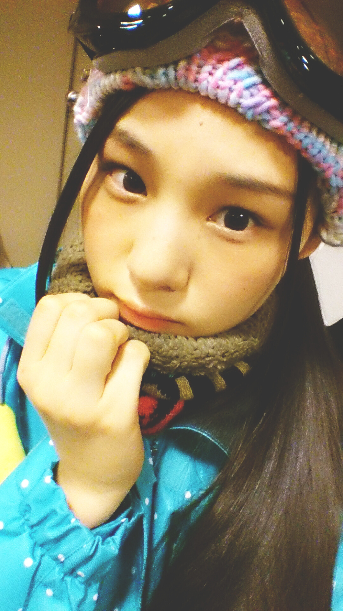
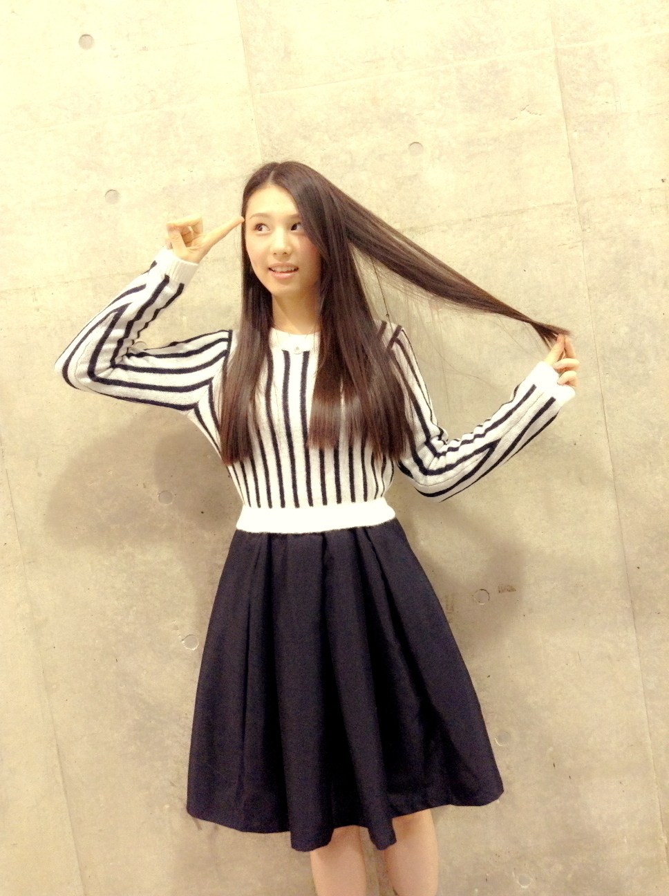
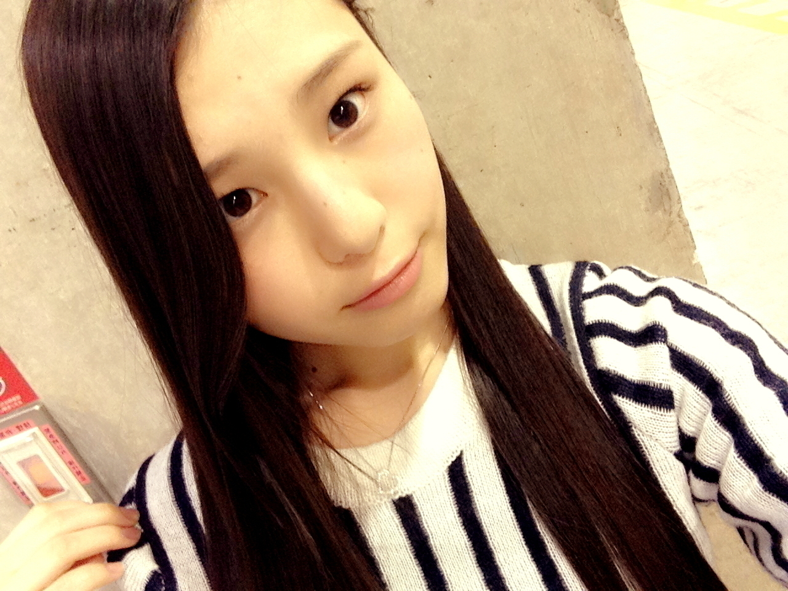
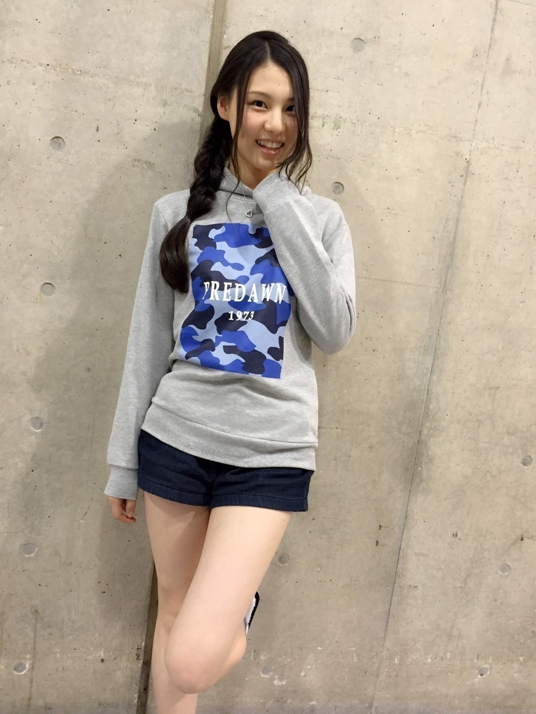
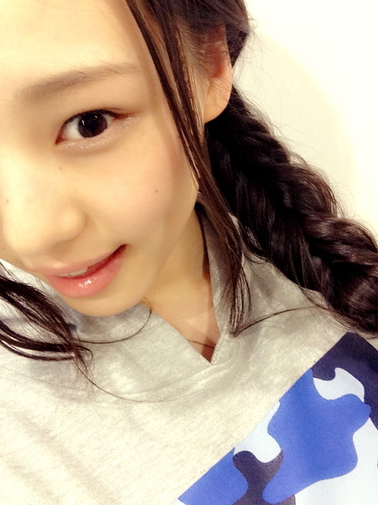
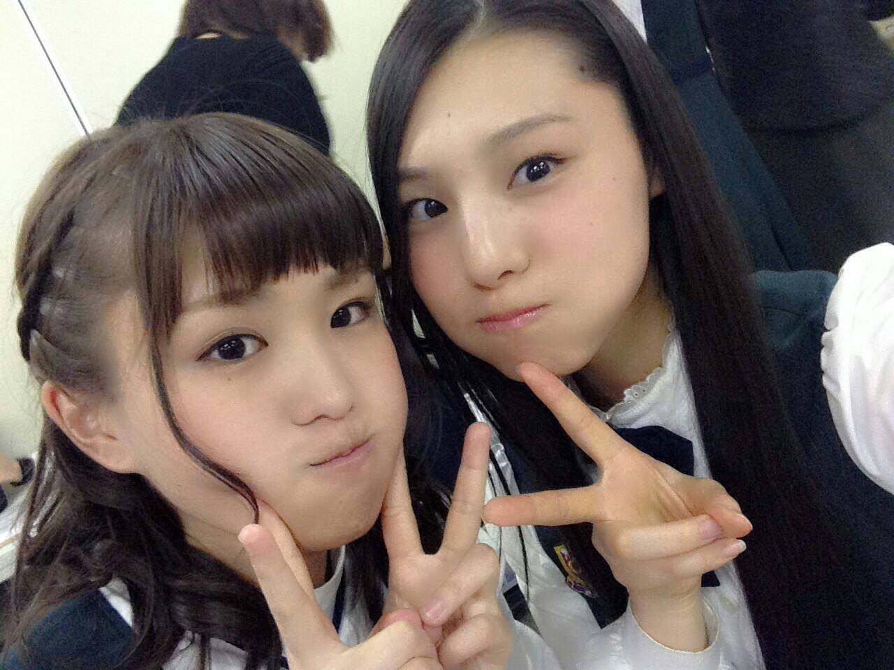
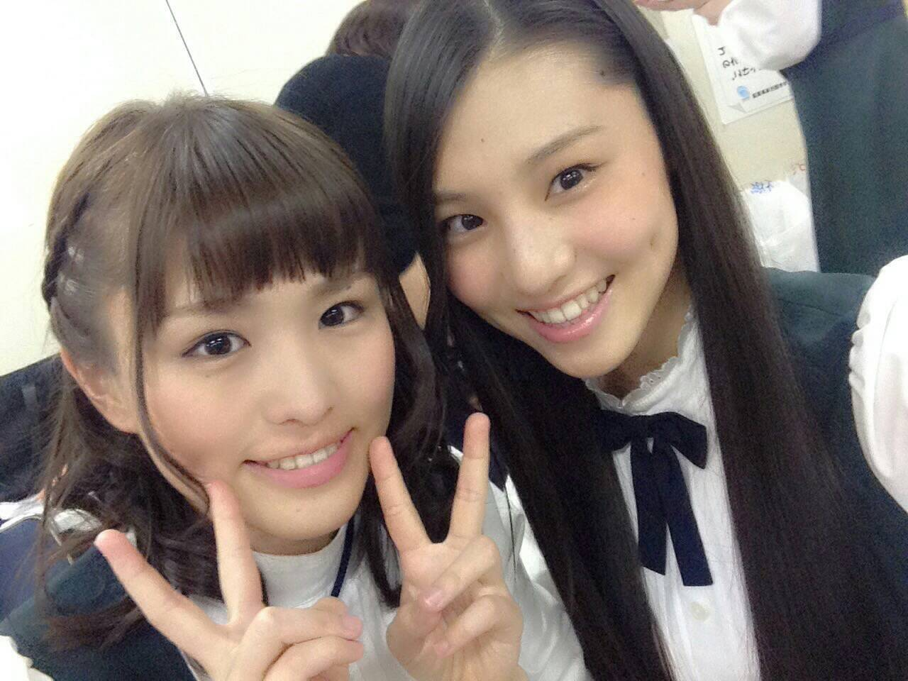
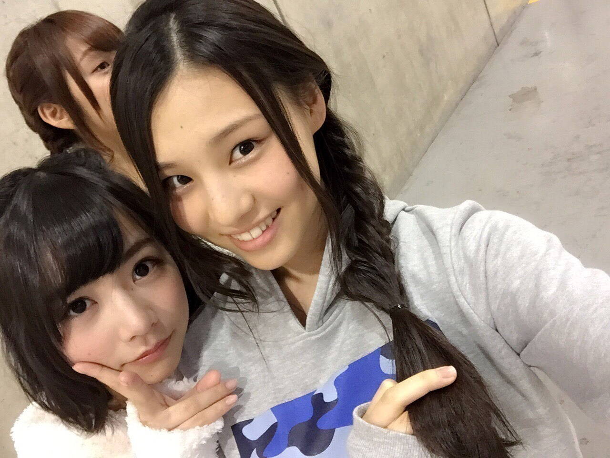
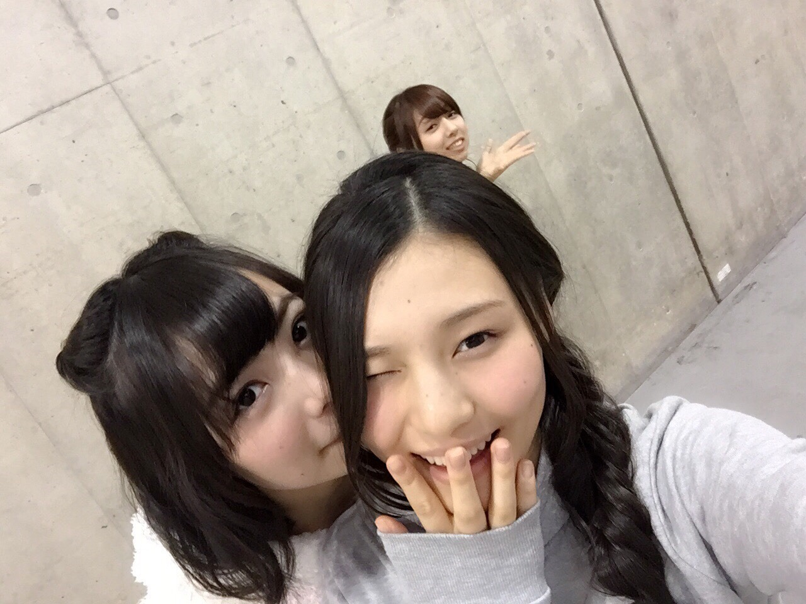
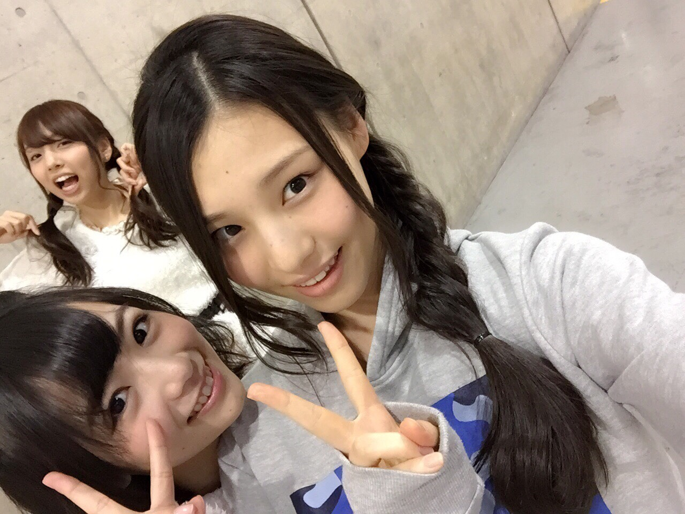

| 2015/02 01 Sun | 小指だけじゃないかも_(．．* )vol.4 |
みなさんこんばんはー！
さがらいおりです！

乃木どこスキーロケの時の！
1/31 東京ビッグサイト握手会
1 部

COCO DEAL
髪型は切ってから初の握手だったので
ストレートにしました！

2 部
洋服は同じで
ハーフアップ巻き
写真撮り忘れました(>_<)
ごめんなさい(>_<)
3 部

前言ってたパーカー着ました！
お揃いの方いて嬉しかった *˙︶˙*)ﾉ"

髪型はフィッシュボーンにした♡
ファンの方に
魚の骨だよ
って言ったら
分かるってるよ
って言われました♡
来てくれてありがとうございました♪♪
いつもいつも
楽しませてもらってます♡！
また来てくださいね～(∩´∀`∩)
~いおり庵~
 富士Ｑの乗り物で何が好き？
オススメのアトラクションは？
富士Ｑの乗り物で何が好き？
オススメのアトラクションは？
ドドンパとええじゃないか！
よく着る服の色は？
私服は黒、グレーがほとんど！
握手会では可愛いお洋服とか
着たいから
色々な色選んでるよ(^-^)/
いおりちゃんはカラオケ行った時に最初に何を歌いますか？
歌える曲が少ないので
あまり行かないけど、
一人で行った時は
安室奈美恵さんを
いっぱい歌います♡♡♡
前のブログのBIRTHDAYのつづりが
違っちゃってたみたいですみません(>_<)
前回忘れてしまったかりんちゃん

ぷくー

にかっ
握手会の時の

まいちゅん、、(・∀・)

まいちゅん、、( ¯∀¯ )

まいちゅん、、( ¯−¯ )
最近は 11 thの制作に
励んでます♡
毎日楽しく過ごせて嬉しいです(´,,•ω•,,)♡
明日も頑張りまーす！！！
今日の乃木どこ
スキーロケ参加したので見てくださーい♪♪
i o r i .

コメント(350)
2015/02/01 22:24